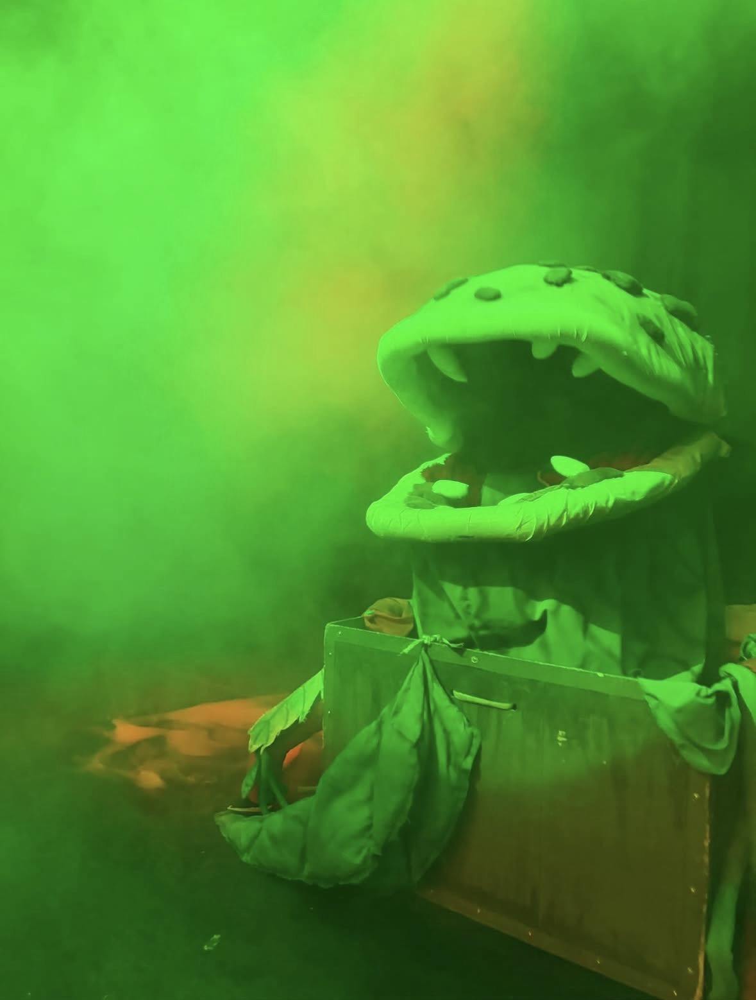
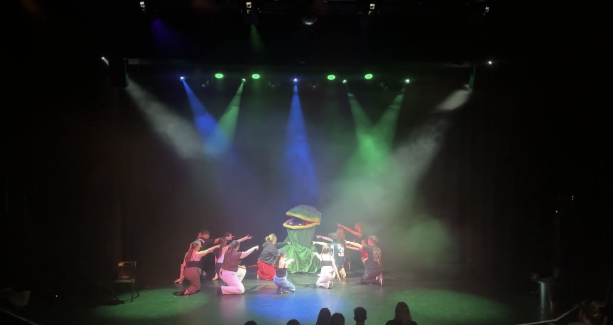

University of Leicester Glee Show 2026

I worked as lead technician, designing and producing the lighting, sound, and show control for a large student musical theatre concert, mixing the show and operating the lights live.
Work included designing and programming over 480 lighting cues, using timecode and OSC, using QLab as the main control software, and managing complex radio microphone requirements for live vocals.

This project required me to learn MIDI Timecode, work with 25 different groups, ranging from solos to full society numbers, to create lighting that matched their ideas while managing the show and co-ordinating with the venue.
When I started the project I quickly realised that certain songs would look better if they had precise lighting cues in time with the music, and that OSC was unable to deliver the consistency I wanted, so I investigated different forms of timecode.
Having never used anything more complex than OSC before, I realised that I would either have to hire a show control gateway or a Nomad dongle. I decided the most cost-effective choice was the dongle, and I hired one for the two weeks leading up to the show. I rebuilt the theatre's internal tech network, which connected both lighting and sound using Dante, and ran the show from my Mac due to the built-in MIDI Studio, with the Gio console as a client.
I learnt about different frame rates, how to convert between conventional time and timecode, and the best way to programme a show using it. I ended up with a different event list for each timecoded song, seven in total, with macros fired to enable and disable them. Each list ranged between 15 and 410 events, from simple flashes on the beat to extensive effects that would have been difficult to time manually.
I quickly found that using QLab to programme the timecode would be time-consuming and cost-prohibitive, as I do not own a licence at home, so I used Reaper to practise and learn the timings before testing them in the venue.
Tools used: ETC Eos, QLab, Midas M32, TheatreMix, MIDI Timecode, radio microphones.
Videos of the showcase are available below. I am particularly happy with Proud Mary and Candy Store.

Little Shop of Horrors - Cosmic Theatre School

I worked with the Cosmic team to design and operate the lighting for their production of Little Shop of Horrors!
Before the start of their tech/ show weekend I was in communication with them starting to plot out the rough idea for their lighting. I then used EOS's Augment 3d to program a rough first draft of the show.
When the weekend came around, I updated my focus pallets and worked with the team throughout the dress rehersals to fine tune the lighting. I shared operating the shows with a work experience pupil, as well as 'Followspotting' some of the characters using one of our moving lights and the desk it self, to keep them seen even when moving out of their light.
To maximise the impact of the show I also made use of haze and fog at appropriate moments. I absolutely loved working with the team on this show, as its is one of my favourite all time musicals!
